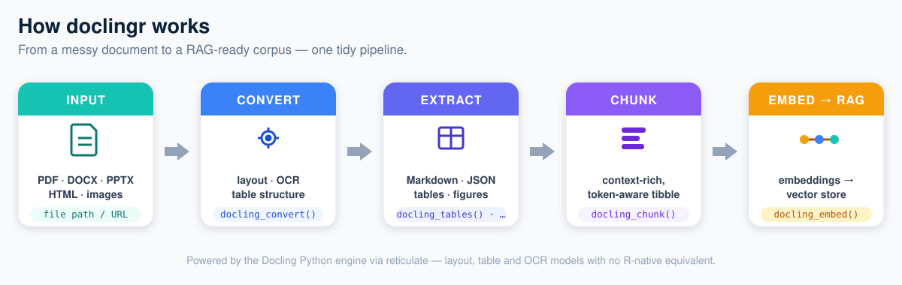

Document intelligence for R — turn messy PDFs, Office files and HTML into AI-ready, structured data.
doclingr is an R interface to Docling, an open-source document-understanding library. It brings layout-aware PDF/DOCX/PPTX/HTML parsing, table extraction, OCR and RAG-ready chunking to R, exposing it through a small, tidy-friendly API built on reticulate.
R already has pdftools, tabulizer, officer, readtext and friends, but no single “document intelligence for RAG” package. doclingr aims to fill that gap: take a document, understand its layout, extract its tables, preserve its structure, chunk it, and hand it back ready for search and embeddings.
How it works

Installation
# install.packages("pak")
pak::pak("StrategicProjects/doclingr")doclingr talks to the Docling Python package via reticulate. Install the backend once:
library(doclingr)
install_docling() # creates an "r-docling" Python environment
# restart R
docling_available() # TRUEUsage
library(doclingr)
doc <- docling_convert("https://arxiv.org/pdf/2408.09869")
# Export
as_markdown(doc) # layout-aware Markdown
as_json(doc) # structured DoclingDocument as an R list
# Pages and tables
docling_n_pages(doc)
tables <- docling_tables(doc) # list of tibbles
tables[[1]]
# Figures -> tibble (captions, pages, optional saved images)
doc <- docling_convert("paper.pdf", images = TRUE)
docling_figures(doc, image_dir = "figures")
# RAG-ready chunks -> tibble
chunks <- docling_chunk(doc, max_tokens = 512)
chunks$text[1]
# Match your embedding model's tokenizer for accurate budgets
chunks <- docling_chunk(doc, tokenizer = "BAAI/bge-small-en-v1.5", max_tokens = 512)From chunks to embeddings
doclingr stays provider-agnostic: bring any embedding function (an API call, a local model via reticulate, …) and docling_embed() handles batching and tidy assembly into an embedding list-column.
embed_openai <- function(txt) {
# your call to an embeddings API -> matrix (one row per text)
}
doc |>
docling_chunk(max_tokens = 512) |>
docling_embed(embed_openai, batch_size = 64)
#> # adds `embedding` (list-column) and `n_dim` columnsWhy Docling, why reticulate?
Docling’s quality comes from deep-learning models (layout analysis, the TableFormer table-structure model, OCR). Those have no R-native equivalent, so doclingr binds the maintained Python implementation rather than reimplementing it — the same strategy used by tensorflow, keras and spacyr. You get upstream parity for free; doclingr focuses on an idiomatic, tidy R surface.
Status
Experimental and under active development. API may change. Contributions and issues welcome at https://github.com/StrategicProjects/doclingr.